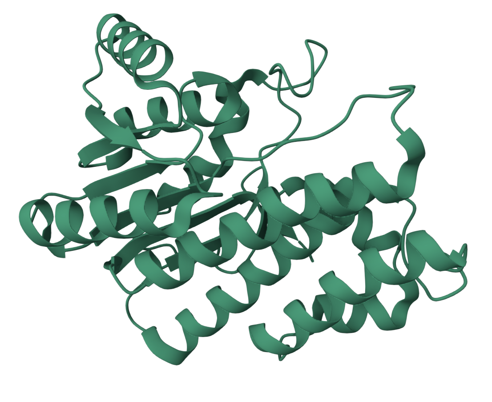

| GENE INFORMATION | ||
|---|---|---|
| Gene name | CBR1 |  |
| Description | Carbonyl Reductase 1 | |
| Gene type | Protein coding gene | |
| Chromosome | 21 | |
| Cytoband | q22.12 | |
| Chromosome location(bp) | 36069941 - 36073166 | |
| Ensembl | ENSG00000159228 | |
| UniProt | P16152 | |
| PROTEIN FUNCTIONi |
|---|
| CBR1 encodes CBR1, an NADPH-dependent reductase with broad substrate specificity. CBR1 catalyzes the reduction of a wide variety of carbonyl compounds including quinones, prostaglandins, menadione, plus various xenobiotics. It converts prostaglandin E to prostaglandin F2-alpha, which can promote uterine contractions, enhance gastrointestinal motility, and dilate blood vessels. CBR1 can also bind glutathione, which explains its higher affinity for glutathione-conjugated substrates. |
NOTE: Gene expression values are scaled by log2(TPM+0.001).